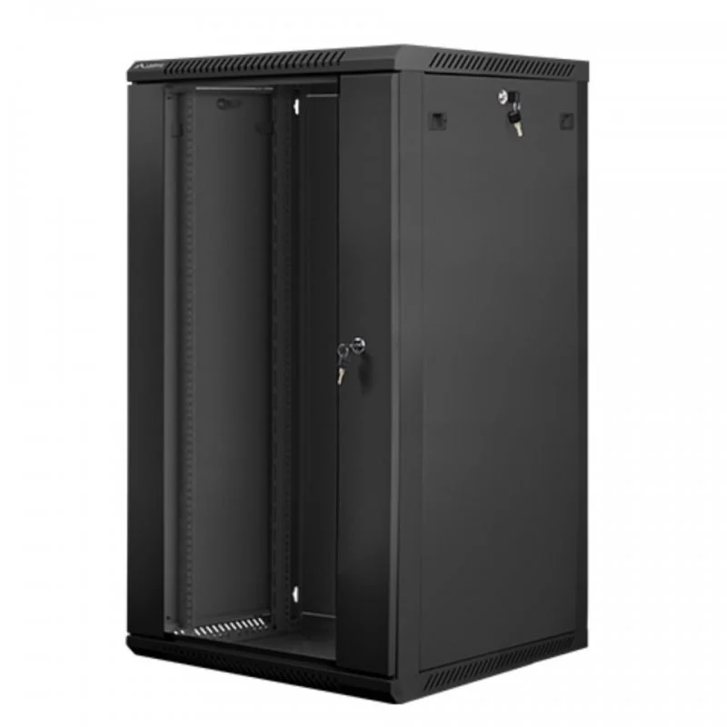

Novedad!!!
Laberg WF01-6622-10B Armario Rack 19"22U (600x1082) Negro
Armario Rack de 22U y 19 pulgadas d4e ancho!!!
Armario Rack de 22U y 19 pulgadas d4e ancho!!!
Ofrecemos soluciones integrales de ciberseguridad y equipamiento de infraestructura TI
Desarrollamos e implementamos soluciones de software especializado en ciberseguridad y gestión de redes, incluyendo DNS seguro, monitorización con Grafana, pasarelas, automatización con Ansible y servidores DHCP con Kea.
Infraestructura física robusta para proteger tu red: desde armarios de rack blindados hasta soluciones de conectividad segura y escalable.
Ofrecemos componentes de red profesionales: switches, routers, racks, cableado estructurado (CAT7/fibra), accesorios de montaje y soluciones llave en mano con mantenimiento incluido.
Para Contactar con nosotro:
Tel: 983 347 378
Email: AMJSecureTech@gmail.com
Dirección: Santa Coloma de Gramanet zona Singuerlin